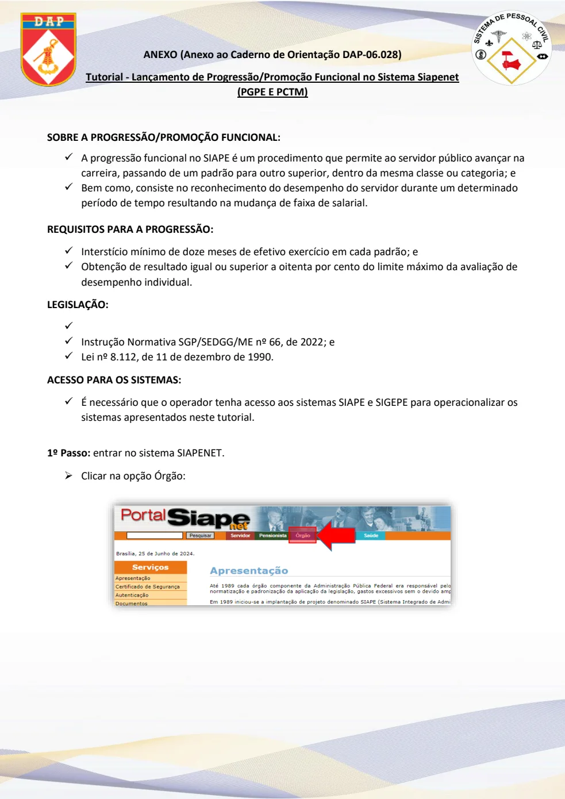
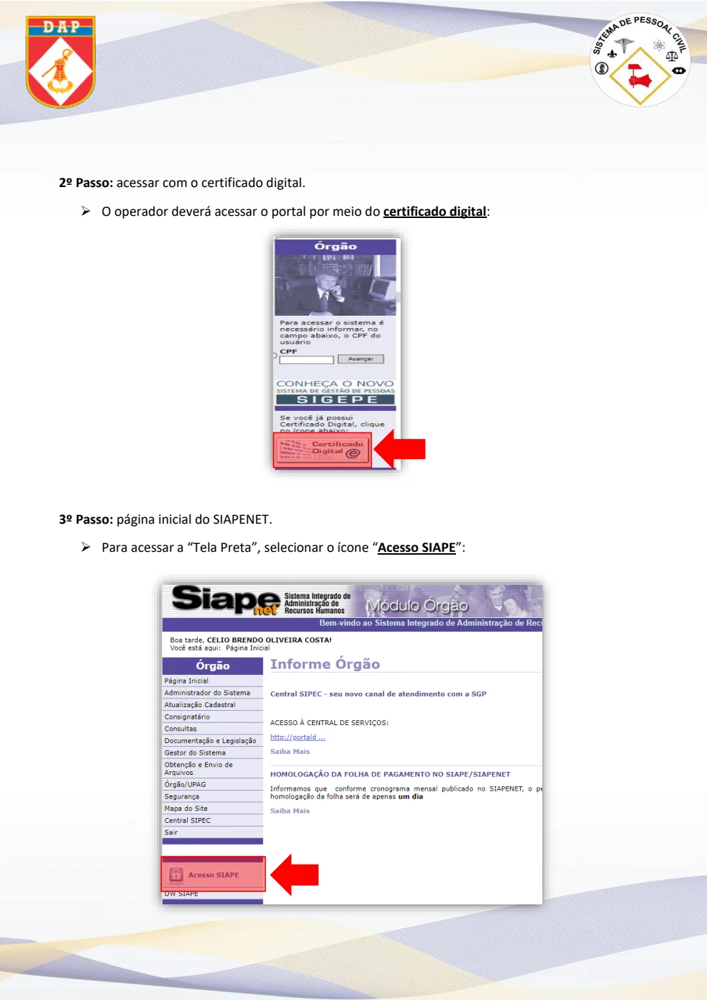
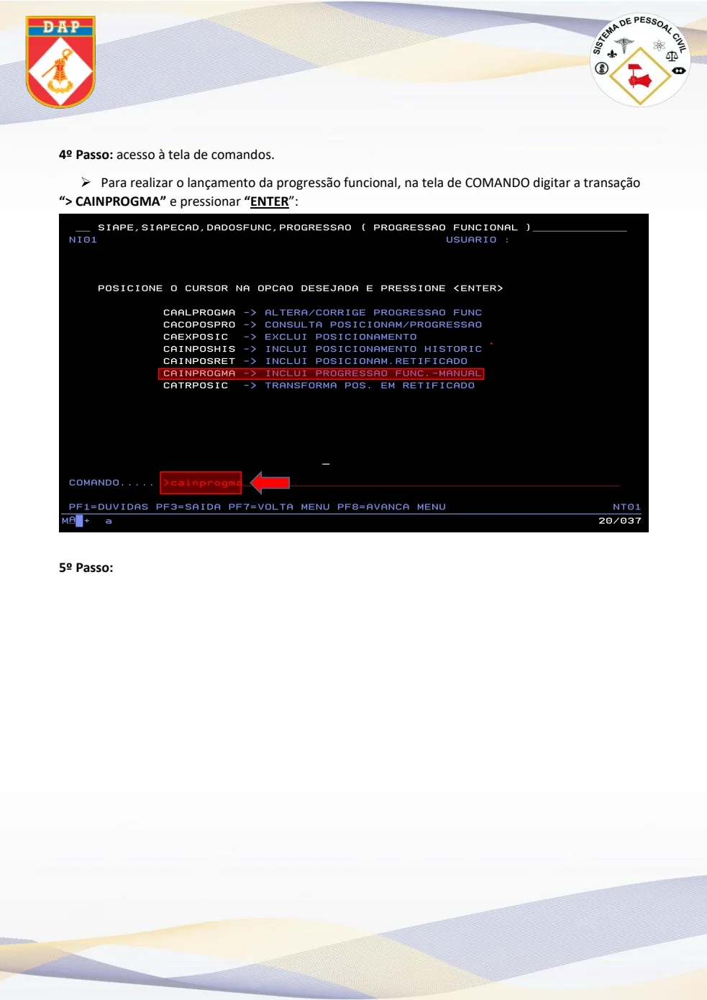
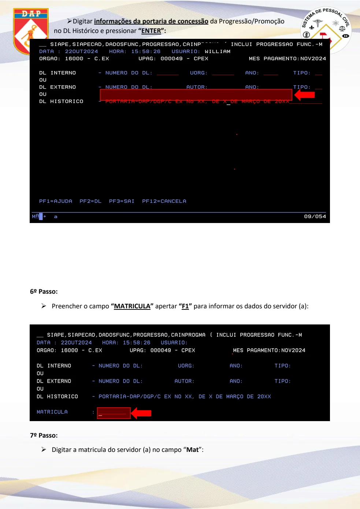
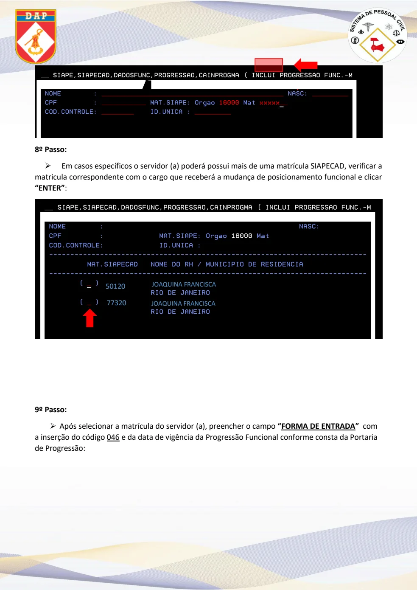
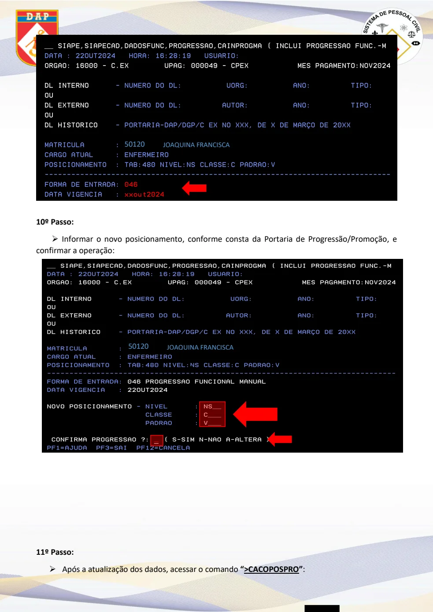
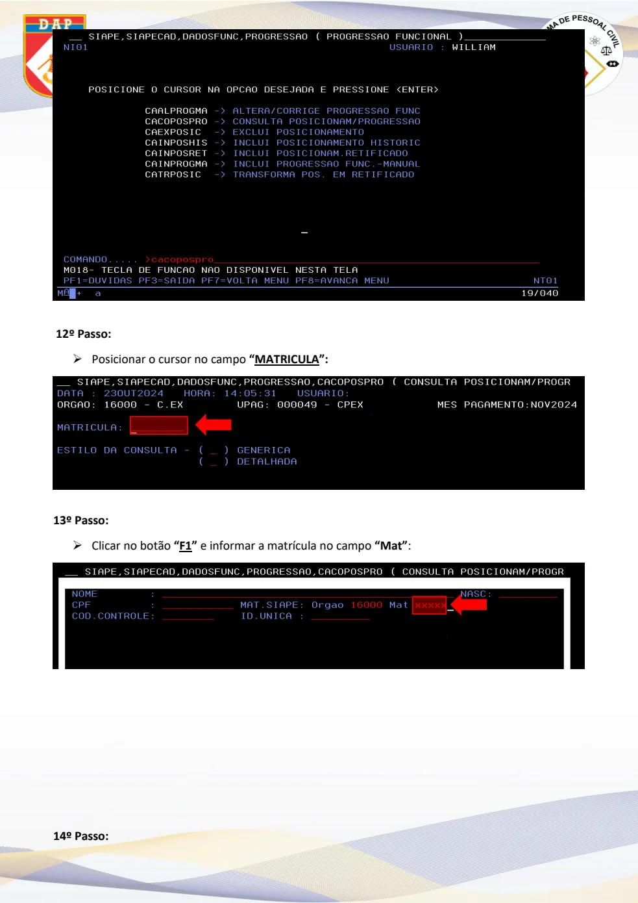
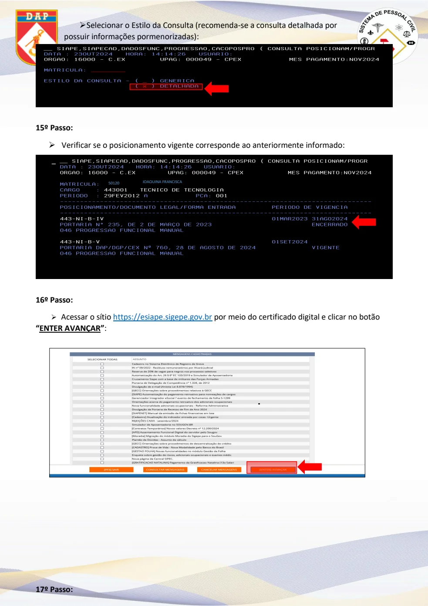
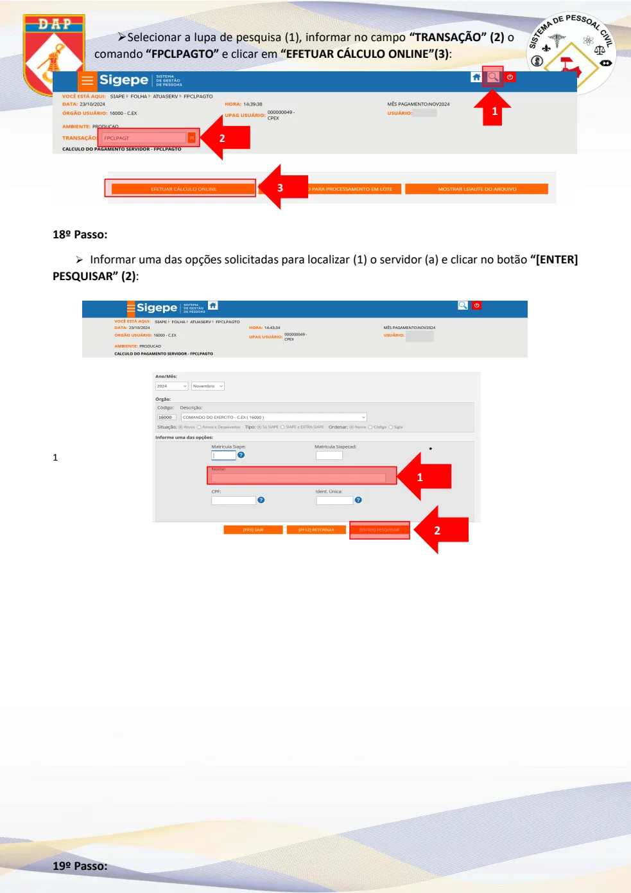
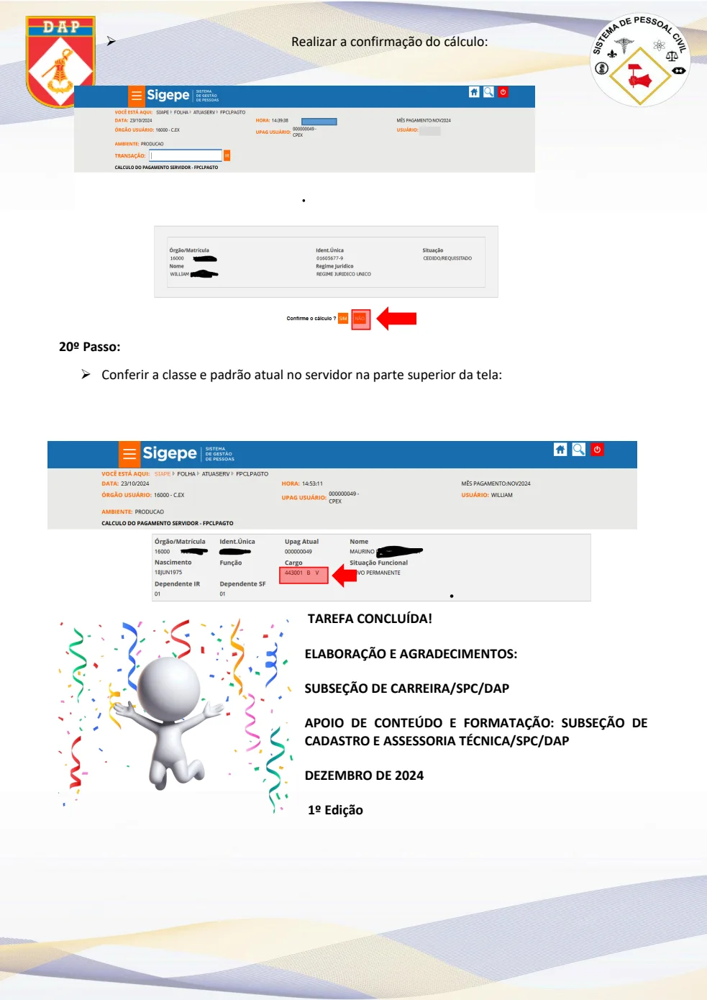

Texto extraído da edição fornecida, sem atualização normativa. Consulte a página original para conferir tabelas, formulários e instruções ilustradas. A numeração dos links corresponde à página do arquivo PDF.
Requisitos e acesso
PDF · p. 1ANEXO (Anexo ao Caderno de Orientação DAP-06.028)
Tutorial - Lançamento de Progressão/Promoção Funcional no Sistema Siapenet
(PGPE E PCTM)
SOBRE A PROGRESSÃO/PROMOÇÃO FUNCIONAL:
✓ A progressão funcional no SIAPE é um procedimento que permite ao servidor público avançar na
carreira, passando de um padrão para outro superior, dentro da mesma classe ou categoria; e
✓ Bem como, consiste no reconhecimento do desempenho do servidor durante um determinado
período de tempo resultando na mudança de faixa de salarial.
REQUISITOS PARA A PROGRESSÃO:
✓ Interstício mínimo de doze meses de efetivo exercício em cada padrão; e
✓ Obtenção de resultado igual ou superior a oitenta por cento do limite máximo da avaliação de
desempenho individual.
LEGISLAÇÃO:
✓
✓ Instrução Normativa SGP/SEDGG/ME nº 66, de 2022; e
✓ Lei nº 8.112, de 11 de dezembro de 1990.
ACESSO PARA OS SISTEMAS:
✓ É necessário que o operador tenha acesso aos sistemas SIAPE e SIGEPE para operacionalizar os
sistemas apresentados neste tutorial.
1º Passo: entrar no sistema SIAPENET.
• Clicar na opção Órgão:
Ver página original — tabelas, imagens e diagramas

Certificado digital e SIAPE
PDF · p. 22º Passo: acessar com o certificado digital.
• O operador deverá acessar o portal por meio do certificado digital:
3º Passo: página inicial do SIAPENET.
• Para acessar a “Tela Preta”, selecionar o ícone “Acesso SIAPE”:
Ver página original — tabelas, imagens e diagramas

Lançamento da progressão
PDF · p. 34º Passo: acesso à tela de comandos.
• Para realizar o lançamento da progressão funcional, na tela de COMANDO digitar a transação
“> CAINPROGMA” e pressionar “ENTER”:
5º Passo:
Ver página original — tabelas, imagens e diagramas

Portaria e matrícula
PDF · p. 4• Digitar informações da portaria de concessão da Progressão/Promoção
no DL Histórico e pressionar “ENTER”:
6º Passo:
• Preencher o campo “MATRICULA” apertar “F1” para informar os dados do servidor (a):
7º Passo:
• Digitar a matricula do servidor (a) no campo “Mat”:
Ver página original — tabelas, imagens e diagramas

Identificação do vínculo
PDF · p. 58º Passo:
• Em casos específicos o servidor (a) poderá possui mais de uma matrícula SIAPECAD, verificar a
matricula correspondente com o cargo que receberá a mudança de posicionamento funcional e clicar
“ENTER”:
9º Passo:
• Após selecionar a matrícula do servidor (a), preencher o campo “FORMA DE ENTRADA” com
a inserção do código 046 e da data de vigência da Progressão Funcional conforme consta da Portaria
de Progressão:
50120
JOAQUINA FRANCISCA
JOAQUINA FRANCISCA
77320
Ver página original — tabelas, imagens e diagramas

Posicionamento
PDF · p. 610º Passo:
• Informar o novo posicionamento, conforme consta da Portaria de Progressão/Promoção, e
confirmar a operação:
11º Passo:
• Após a atualização dos dados, acessar o comando “>CACOPOSPRO”:
JOAQUINA FRANCISCA 50120
JOAQUINA FRANCISCA 50120
Ver página original — tabelas, imagens e diagramas

Consulta
PDF · p. 712º Passo:
• Posicionar o cursor no campo “MATRICULA”:
13º Passo:
• Clicar no botão “F1” e informar a matrícula no campo “Mat”:
14º Passo:
Ver página original — tabelas, imagens e diagramas

Conferência
PDF · p. 8• Selecionar o Estilo da Consulta (recomenda-se a consulta detalhada por
possuir informações pormenorizadas):
15º Passo:
• Verificar se o posicionamento vigente corresponde ao anteriormente informado:
16º Passo:
• Acessar o sítio https://esiape.sigepe.gov.br por meio do certificado digital e clicar no botão
“ENTER AVANÇAR”:
17º Passo:
JOAQUINA FRANCISCA 50120
Ver página original — tabelas, imagens e diagramas

Cálculo do pagamento
PDF · p. 9• Selecionar a lupa de pesquisa (1), informar no campo “TRANSAÇÃO” (2) o
comando “FPCLPAGTO” e clicar em “EFETUAR CÁLCULO ONLINE”(3):
18º Passo:
• Informar uma das opções solicitadas para localizar (1) o servidor (a) e clicar no botão “[ENTER]
PESQUISAR” (2):
1
19º Passo:
1
2
3
1
2
Ver página original — tabelas, imagens e diagramas

Confirmação final
PDF · p. 10• Realizar a confirmação do cálculo:
20º Passo:
• Conferir a classe e padrão atual no servidor na parte superior da tela:
TAREFA CONCLUÍDA!
ELABORAÇÃO E AGRADECIMENTOS:
SUBSEÇÃO DE CARREIRA/SPC/DAP
APOIO DE CONTEÚDO E FORMATAÇÃO: SUBSEÇÃO DE
CADASTRO E ASSESSORIA TÉCNICA/SPC/DAP
DEZEMBRO DE 2024
1º Edição
Ver página original — tabelas, imagens e diagramas
